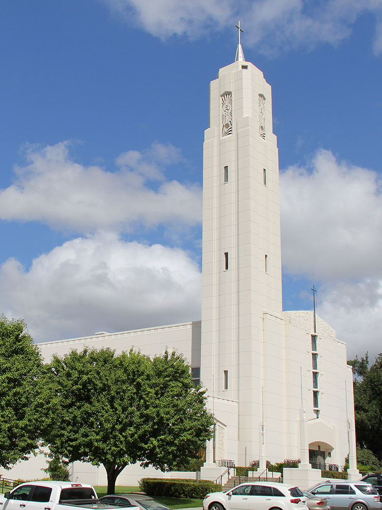
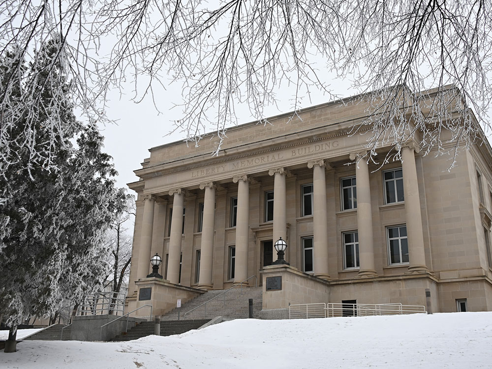

.jpg){kind=link}
Capital city featuring government institutions, historic attractions, riverfront recreation, cultural venues, and a growing regional business center.
General Information
How to Get There
From Radisson Hotel Bismarck (0.4 mi): Head north on 3rd Street, continue toward downtown, then travel to the City/County Building at 221 N 5th St.
Overview
Bismarck is the capital of North Dakota, on the east bank of the Missouri River in the south-central part of the state, directly across the river from the city of Mandan. It is known for its landmark State Capitol, a 19-story Art Deco tower called the "Skyscraper of the Prairie," and for its role in the history of the Lewis and Clark Expedition, the steamboat era, and the Northern Plains. The city has a relaxed pace, small-town friendliness, and easy access to the river and the prairie.
Visitors come to Bismarck for the State Capitol and the excellent North Dakota Heritage Center & State Museum, for Fort Abraham Lincoln State Park across the river in Mandan, and for the riverfront. They also come for the nearby Lewis and Clark sites, for the Dakota Zoo, and as a stop on the way to Theodore Roosevelt National Park, about two hours west.
History
The Mandan, Hidatsa, and Arikara peoples lived along the Missouri River for centuries, and Lewis and Clark wintered at Fort Mandan, about 40 miles north, in 1804 and 1805, where they met Sakakawea, who guided the expedition. The city was founded in 1872 as Edwinton and renamed Bismarck in 1873 in honor of the German chancellor Otto von Bismarck, in an effort to attract German investors and settlers to the Northern Pacific Railway. It became the capital of Dakota Territory in 1883 and of North Dakota in 1889, and Fort Abraham Lincoln, where General George Custer's 7th Cavalry was stationed, rode out from here in 1876 to the Battle of the Little Bighorn. Steamboats and the railroad made it an important trade center on the Northern Plains.
Sightseeing and Popular Landmarks
The North Dakota State Capitol, completed in 1934, has an observation deck on the 18th floor with sweeping views of the city and the prairie and is open for free tours. The State Capitol grounds have a memorial to the state's history, and the Former Governors' Mansion State Historic Site is a Victorian home. Fort Abraham Lincoln State Park has a reconstructed cavalry post and On-A-Slant Indian Village, with earth lodges, and the Camp Hancock State Historic Site is a small museum from 1872. Custer Park and the Bismarck Art Alley are also worth a look.
Culture and Museums
The North Dakota Heritage Center & State Museum tells the story of the state from the Ice Age to the present, with large exhibits on the Northern Plains Indians and the state's geology and fossils, and it has free admission. The Dakota Zoo and the Gateway to Science Center are also popular with families. The Belle Mehus Auditorium, a historic theater, hosts concerts, and the Bismarck Art & Galleries Association and the Bismarck-Mandan Symphony provide performances. The United Tribes Technical College hosts the United Tribes International Powwow each September.
Parks
Bismarck has more than 80 parks and a good trail system. Sertoma Park has the Dakota Zoo, a rose garden, and a Japanese garden, and the Keelboat Park and Riverwalk offers views of the Missouri River. The Missouri Valley Trail System runs for miles along the river, and Pioneer Park is a popular picnic area. Lake Sakakawea, a huge reservoir north of the city, offers boating and fishing, and the Lewis and Clark Riverboat is a tourist cruise on the river.
Seasons and Weather
Bismarck has a humid continental climate with a wide range of temperatures. Summers are warm, with highs in the 80s°F, and winters are long and very cold, with highs in the teens and 20s°F and about 50 inches of snow, and cold snaps can send temperatures well below zero. Spring and fall are short, and the best time to visit is from late May to September. Thunderstorms are common in summer.
Things to Do
Discover North Dakota's Capital City
Bismarck, the capital of North Dakota, sits along the Missouri River and offers a blend of history, culture, natural beauty, and outdoor recreation. Visitors can explore state government landmarks, museums, riverfront parks, trails, and historic attractions while enjoying the welcoming atmosphere of one of the Great Plains' most vibrant cities.
Visit the North Dakota Heritage Center & State Museum
One of the city's premier attractions, the North Dakota Heritage Center & State Museum showcases the state's natural history, Native American heritage, dinosaur fossils, pioneer settlement, and modern development. Interactive exhibits and extensive collections make it an excellent introduction to North Dakota's history and culture.
Tour the North Dakota State Capitol
The 21-story North Dakota State Capitol, often called the "Skyscraper on the Prairie," is one of the most distinctive government buildings in the United States. Visitors can tour the grounds, learn about state government, and enjoy views of Bismarck from the observation deck.
Explore the Missouri River Waterfront
The Missouri River is central to Bismarck's identity and provides opportunities for boating, kayaking, fishing, river cruises, and wildlife viewing. Nearby parks and trails offer scenic overlooks and access to the river's natural beauty.
Visit Fort Abraham Lincoln State Park
Located just south of the city, Fort Abraham Lincoln State Park preserves military history, reconstructed earth lodges of the Mandan people, and the former home of Lt. Col. George A. Custer. The park is one of North Dakota's most important historical attractions and offers excellent hiking and scenic views of the Missouri River Valley.
Top Trails
Missouri River Natural Area Trail
Length: Approximately 3 to 5 miles of interconnected trails
Elevation Gain: Minimal
Difficulty: Easy
This scenic trail system follows portions of the Missouri River and offers opportunities for birdwatching, wildlife viewing, and enjoying beautiful river landscapes within the city limits.
Keelboat Park and Riverwalk Trail
Length: Approximately 2 miles round trip
Elevation Gain: Minimal
Difficulty: Easy
Following the Missouri River near downtown, this route provides pleasant waterfront views, interpretive exhibits, and access to parks and recreational facilities along the riverfront.
Pioneer Park Trail System
Length: Variable distances available
Elevation Gain: Minimal
Difficulty: Easy
Pioneer Park offers a network of walking and biking trails through wooded areas and open green spaces. It is a popular destination for outdoor recreation, picnicking, and family activities.
Fort Abraham Lincoln State Park Trails
Length: More than 7 miles of trails
Elevation Gain: Moderate
Difficulty: Easy to Moderate
Just outside Bismarck, these trails traverse prairie landscapes, river bluffs, and historic sites while providing excellent views of the Missouri River Valley and opportunities to experience North Dakota's natural and cultural heritage.
Sources: North Dakota Tourism and Bismarck-Mandan Convention & Visitors Bureau information regarding Bismarck attractions, the Missouri River, North Dakota Heritage Center & State Museum, State Capitol, and local recreation opportunities. https://www.ndtourism.com and https://www.bismarckmandan.com
Additional information verified through North Dakota Parks and Recreation resources covering Fort Abraham Lincoln State Park, Missouri River trails, riverfront parks, and outdoor recreation opportunities throughout the Bismarck area.
The North Dakota State Capitol complex is just north of downtown Bismarck. The 19-story Art Deco capitol is the tallest building in the state, at a height of 241.75 feet (73.69 m). The capitol building towers over the city's center and is easily seen from 20 miles (32 km) away on a clear day. Completed during the Great Depression in 1934, it replaced a capitol building that burned to the ground in 1930. The capitol grounds encompass the North Dakota Heritage Center, the North Dakota State Library, the North Dakota Governor's Residence, the State Office Building, and the Liberty Memorial Building.
The Cathedral District, named after the Art Deco Cathedral of the Holy Spirit, is an historic neighborhood near downtown Bismarck. Some homes in this neighborhood date to the 1880s, although many were built in the first decades of the 20th century.
The Parks and Recreation District operates roughly 2,300 acres (930 ha) of public parkland. Sertoma Park stretches more than 3 miles (4.8 km) along the banks of the Missouri River. Within the park are several miles of biking trails and the Dakota Zoo.
This article uses material from Wikipedia as well as information from official tourism and institutional sources. Key references include Visit Bismarck-Mandan, North Dakota Tourism, State Historical Society of North Dakota, Fort Abraham Lincoln State Park, and National Weather Service Bismarck. Wikipedia material is from the article "Bismarck, North Dakota", and is available under the Creative Commons Attribution-Share-Alike License 3.0.
Featured Locations

Bismarck Art Alley
Outdoor mural gallery featuring vibrant public art installations by local artists celebrating regional culture and creativity.
Camp Hancock State Historic Site
Historic military post turned museum featuring North Dakota’s oldest building, a steam locomotive, and early weather station exhibits.
Custer Park
Urban green space offering shaded seating, a stage, and a large eagle sculpture in a peaceful neighborhood setting.
North Dakota Heritage Center & State Museum
Expansive museum complex featuring interactive exhibits, fossil displays, and cultural artifacts that trace the region’s history from prehistoric times to the present.



.jpg){kind=link}